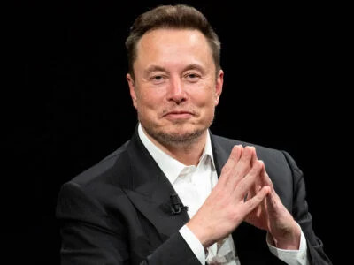

Tesla busca substituto para Elon Musk, diz jornal; empresa nega
O motivo para a troca seria o envolvimento de Musk com o governo de Donald Trump.
O conselho de administração da Tesla está em busca de um novo CEO para substituir Elon Musk no comando da montadora. A informação foi dada pelo “Wall Street Journal”, citando fontes próximas às discussões.
Musk disse no X que a reportagem era um "artigo deliberadamente falso". Robyn Denholm, presidente do conselho da Tesla, negou a informação do “WSJ”.
Denholm chamou a reportagem de “absolutamente falsa” e disse, também no X, que o conselho da Tesla está "altamente confiante" na capacidade de Musk de "continuar executando o empolgante plano de crescimento à frente".
Em um comunicado, o “Wall Street Journal” afirmou que mantém as informações da reportagem.
Musk sobre pressão
Investidores ativistas há muito acusam o conselho da Tesla de falta de independência e de não controlar Musk.
Alguns, contudo, acreditam que Trump ajudará a promover a empresa.
O bilionário havia prometido fazer da Tesla uma nova plataforma de carros elétricos acessíveis, mas mudou os rumos para priorizar lançamentos como táxis
sem motorista e robôs humanoides, colocando-a como uma empresa de IA e robótica em vez de uma montadora.
O papel de Musk no governo Trump, supervisionando os esforços para cortar gastos federais, e seu alinhamento a líderes de extrema direita geraram ressentimento nos consumidores, resultando em protestos contra o bilionário, vandalismo em seus showrooms e em estações de carregamento.